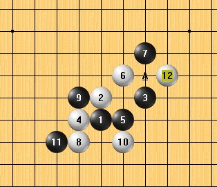

苏沪赛顾炜考蒋晓华残月败8白12以后的地毯
#1 苏沪赛顾炜考蒋晓华残月败8白12以后的地毯 作者：小丸.net 发表时间：2011-8-14 22:40:10

 考.zip
考.zip
苏沪赛顾炜考蒋晓华残月败8白12后的地毯，每个点都由本人亲手验证无误才敢发，听说这个有盘端问题，但是我没有发现，如果谁知道请发一个。
标记简介：
A 此点必胜
X 此点必败
XA,XB,XC....此点必败，XA为最强防。。。。XB为次强，以此类推。
另外求白10的另外一个防点后面黑必胜的变化。
［此帖子已被 小丸.net 在 2011-8-14 22:40:51 编辑过］
#2 Re:苏沪赛顾炜考蒋晓华残月败8白12以后的地毯 作者：五连达人 发表时间：2011-8-14 22:42:03

#3 Re:苏沪赛顾炜考蒋晓华残月败8白12以后的地毯 作者：江南新绿 发表时间：2011-8-14 22:52:30
=======上图对应的爱五子棋谱代码如下，以便你拆解：========
h8h9j9g8i8i10j11g7g9i7f7k10j10j12f9f8g6h7j8j7k7
======================================================
我的棋谱
#4 Re:苏沪赛顾炜考蒋晓华残月败8白12以后的地毯 作者：自来水 发表时间：2011-8-14 22:53:31
=======上图对应的爱五子棋谱代码如下，以便你拆解：========
j9i10h8h9i8g8j11
======================================================
#5 Re:苏沪赛顾炜考蒋晓华残月败8白12以后的地毯 作者：屏蔽 发表时间：2011-8-15 0:00:53
不是这个棋谱有盘端问题，而是另一个没有盘端问题的杀法，从我的印象来看，太不流行。
=======上图对应的爱五子棋谱代码如下，以便你拆解：========
h8i9j7j8i7k7h10k6k8i6j6g9h9h11h7h6f7g7g8i10e8f8e6d5e9e7d9c10f11
======================================================
#6 Re:苏沪赛顾炜考蒋晓华残月败8白12以后的地毯 作者：隔世的风 发表时间：2011-8-15 0:11:49
=======上图对应的爱五子棋谱代码如下，以便你拆解：========
h8i9j7
======================================================
原来这样开局叫“残月”呀，长见识了
#7 Re:Re:苏沪赛顾炜考蒋晓华残月败8白12以后的地毯 作者：离子阵阵雨 发表时间：2011-8-15 2:22:19
你这个是水月#8 Re:苏沪赛顾炜考蒋晓华残月败8白12以后的地毯 作者：侯军学棋 发表时间：2011-8-15 4:52:44
2222.rar不是这个15必胜的莫
#9 Re:Re:苏沪赛顾炜考蒋晓华残月败8白12以后的地毯 作者：屏蔽 发表时间：2011-8-15 5:45:27
引用：
原文由 隔世的风 发表于 2011-8-15 0:11:49 :
=======上图对应的爱五子棋谱代码如下，以便你拆解：========
h8i9j7
======================================================原来这样开局叫“残月”呀，长见识了
这个不是残月，是水月。
#10 Re:苏沪赛顾炜考蒋晓华残月败8白12以后的地毯 作者：百无禁忌 发表时间：2011-8-15 10:07:50
#11 Re:苏沪赛顾炜考蒋晓华残月败8白12以后的地毯 作者：小元 发表时间：2011-8-15 12:05:56
残月和水月确实有个别盘端问题#12 Re:苏沪赛顾炜考蒋晓华残月败8白12以后的地毯 作者：隐语者 发表时间：2011-8-15 16:42:53
#13 Re:苏沪赛顾炜考蒋晓华残月败8白12以后的地毯 作者：小帮帮 发表时间：2011-8-16 3:46:27
这路变化，残、水杀法有些区别。楼主的A点可杀
=======上图对应的爱五子棋谱代码如下，以便你拆解：========
h8h9j9i10i8g8j11g7g9i7f7k10j10j12g6h7f9e8f8j7k7f6i11
======================================================
最强变化如上
#14 Re:苏沪赛顾炜考蒋晓华残月败8白12以后的地毯 作者：天涯独行客 发表时间：2011-8-16 15:59:35
引用：
原文由 小丸.net 发表于 2011-8-14 22:40:10 :
苏沪赛顾炜考蒋晓华残月败8白12后的地毯，每个点都由本人亲手验证无误才敢发，听说这个有盘端问题，但是我没有发现，如果谁知道请发一个。标记简介：
A 此点必胜X 此点必败
XA,XB,XC....此点必败，XA为最强防。。。。XB为次强，以此类推。另外求白10的另外一个防点后面黑必胜的变化。
［此帖子已被 小丸.net 在 2011-8-14 22:40:51 编辑过］
这个6是必败的，你问的10,谱中有，你自己找吧。
这个谱是我几年前做的，有点大，大家将就着参考一下吧。
#15 Re:Re:苏沪赛顾炜考蒋晓华残月败8白12以后的地毯 作者：天涯独行客 发表时间：2011-8-16 16:04:58
谱太大了，上传没有成功，
有需要的，留QQ或邮箱，我发给你们吧
#16 Re:苏沪赛顾炜考蒋晓华残月败8白12以后的地毯 作者：有志青年 发表时间：2011-8-16 16:12:24
或分卷压缩上传
［此帖子已被 有志青年 在 2011-8-16 16:14:32 编辑过］
#17 Re:苏沪赛顾炜考蒋晓华残月败8白12以后的地毯 作者：战乱 发表时间：2011-8-17 9:29:46
不知道我这个行不行~#18 Re:苏沪赛顾炜考蒋晓华残月败8白12以后的地毯 作者：飞翔 发表时间：2011-8-17 13:02:22
非常感谢！
#19 Re:苏沪赛顾炜考蒋晓华残月败8白12以后的地毯 作者：天涯独行客 发表时间：2011-8-17 18:05:50
已经上传资料区ShowPost.asp?ThreadID=14938
我的标志体系：A黑必胜 B黑优 C黑白平衡 D白优 E白必胜
#20 Re:苏沪赛顾炜考蒋晓华残月败8白12以后的地毯 作者：dyccj 发表时间：2011-8-19 13:30:21